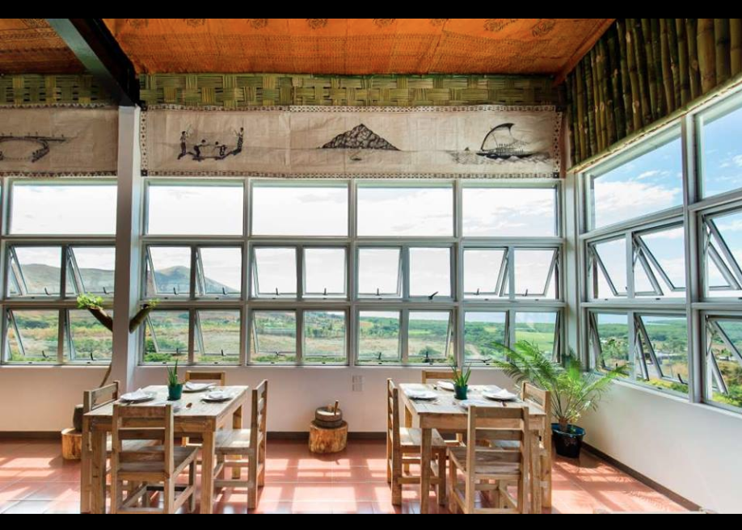
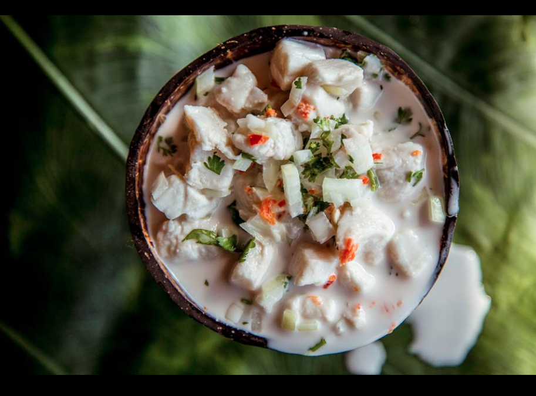
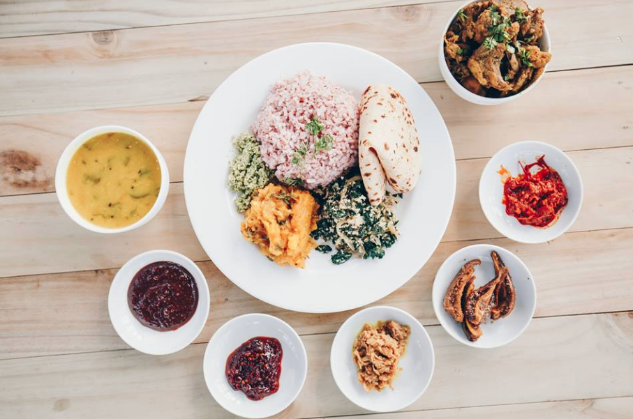
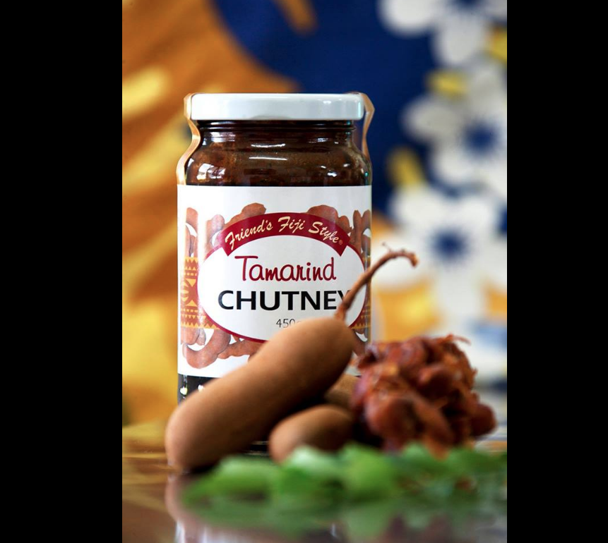
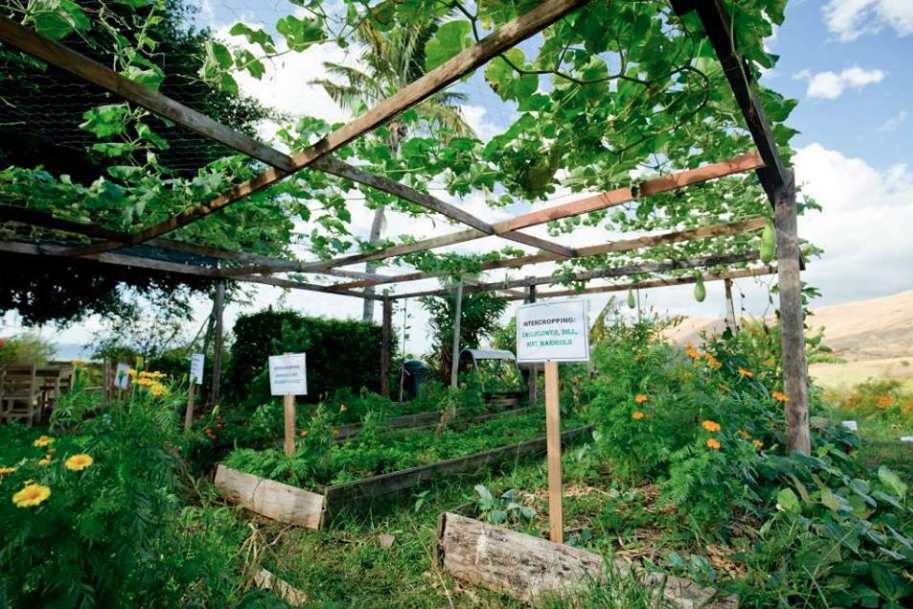

Tukuni Fiji: A farm-to-table venture like no other
Situated atop Tuvu Mountain, off the Kings Highway in Lautoka, is a picturesque restaurant imbued with a multitude of stories – stories of perseverance and determination, of ingenuity and innovation, of culture and equity, of acceptance and dignity, of Fiji – masterfully conveyed through its cuisine, décor and aesthetics, and practices and values. Sounds like the beginning of an interesting restaurant review but keep reading, because this is so much more than that.
By Shazia Usman
At Tukuni, enjoy your delicious meal with a 360-degree ocean view to boot! CREDIT: Tukuni Fiji
Called Tukuni, the indigenous Fijian word for ‘storytelling’, the name pays homage to the oral tradition of the indigenous Fijians in the passing down of history, cultural traditions and knowledge from generation to generation.
But if you know anything about Fiji, you know that any authentic Fijian food experience is incomplete without Indo-Fijian cuisine. Indo-Fijians, or Fijians of Indian descent, have been part of Fiji’s history since 1879, when they were first brought to the country from India under the British indentured labour system.
Today, nearly 140 years later and despite political differences, both cultures enjoy the traditional cuisines of the other, in homes, as well as in restaurants and cafes. Tukuni embodies this culinary union skillfully through its daily-changing menu featuring delectable dishes such as ika tavu (smoked fish), kokoda (marinated fish in coconut), rourou (dalo leaves) and root crops, alongside free-range chicken and duck curries, Fiji’s favourite red rice, dhal (lentil soup) and maize roti (flatbread).
Mouth-watering kokoda with tavu eggplant. CREDIT: Tukuni Fiji
Tukuni offers authentic Fijian cuisine that also includes Indo-Fijian dishes. Credit: Tukuni Fiji
The restaurant has four chefs, women from the nearby villages who employ traditional methods of cooking, grinding spices by hand on ancient stone implements imbued with flavours from rural kitchens, and cooked over an open fire or fuel-efficient clay chula (fireplace).
And perhaps the most important aspect of it all lies in how it sources its ingredients, as this is not your average farm-to-table venture. But to tell that story and the story of how the restaurant even came into existence requires us to travel back in time, for Tukuni has a unique origin story.
The year was 2000, the month May. Fiji was in the grips of its third coup d’état, but unlike the other two coups in 1987, civilians led this one. With members of parliament kept hostage for 56 days; schools and businesses closed; increasing racism, violence and instability; and fear at an all time high, the country was going through one of its worst crises.
Frustrated and disillusioned by the political turmoil, one woman decided to change the narrative for people who were the most socially, politically and economically disadvantaged.
Speaking at Fiji’s first TedxSuva, Sashi Kiran shared how she followed her dream of helping others, which she hoped would inspire others to do the same.
Sashi Kiran, FRIEND Fiji Founder and Director, speaking at TEDxSuva. CREDIT: TEDxSuva
“[After the coup in 2000] I resigned from my job and made a move to living closer to communities because everything [coups] was being done in the name of communities – the grassroots. So I shifted out of Suva and to the West. Since we had been talking about economic disparity, we now needed a model that would create economic opportunity for thousands of people without having any funding. I didn’t have any resources. It was just an idea at that stage. So how do we create an economic model that gives money for thousands so that people really shift out of poverty, and along the way identifies gaps – gaps that would never again be used as an excuse for any [political] crisis? Having studied communities over a period of time we knew they had many strengths. People had food, they were growing, preserving, sustaining people in the communities for generations.”
In 2001 she formed a nongovernmental organisation called the Foundation for Rural Integrated Enterprises & Development or FRIEND Fiji for short. FRIEND Fiji works directly with communities to help them recognise their strengths then provides skills, training and resources to help them step out of poverty and receive a regular and sustainable income. Setting-up systems where smallholder farmers and producers can find market and livelihood options is a key focus.
“So one of the first things we did was look at food we had in the market. So many things were being imported. Having grown up in the Indian culture, I knew there were lots of preserves that had long shelf life, so we called out for recipes for preserves. A lovely woman called Saras, who at that time was a caterer at events, cooking to make money, volunteered her recipe. We decided to package, market and trial her preserves. Her product was launched on International Women’s Day on 8 March 2003. It was just a model that was being tried out at that particular time. The product was great but there had to be a lot that had to be worked for the market – the planning, organising, making sure the volumes were there. So it needed a lot of training, lot of processes, all adding to the value chain. But more than anything, it needed the belief that it could be done – the social empowerment. So we worked with her and tried to make her dream [of owning her own business] come true. We worked with a whole team of people to make this project work. The product is being produced for over ten years now and has a market.”
By supporting Saras’ dream, FRIEND Fiji also empowered hundreds of other women who supply her with tamarind, a wild fruit in season all year-round and a key ingredient in making the preserve.
“Whenever the women need money, they can sell their tamarind to this process,” says Kiran.
FRIEND Fiji’s preserves and chutneys are a favourite of many. CREDIT: FRIEND Fiji
Aside from preserves and chutneys, FRIEND Fiji has expanded its range of organic products to teas, flours and spices.
Since starting in 2001, FRIEND Fiji is now widely recognised and respected as one of the country’s most innovative enterprises. It has worked with communities on many different projects, all geared towards strengthening their resilience.
Tukuni is one of its latest ventures, which ensures organic farmers secure a market for their produce and where local fishermen, severely affected by Category 5 Tropical Cyclone Winston in 2016, are able to sell their seafood.
“We source our produce from organic farmers in Dreketi on Vanua Levu, as well as farmers around Lautoka and Ra on Viti Levu. We also source from our own farms. We only serve local vegetables and fruits. There are zero imported raw materials,” explained Kiran.
Tukuni’s own farm. CREDIT: Tukuni Fiji
Non-Communicable Diseases (NCDs) such as diabetes, high blood pressure, heart disease, chronic kidney disease and cancer, are on the rise in Fiji. Taking the lives of thousands prematurely, the Ministry of Health estimates that 80 percent[1] of deaths in Fiji are a result of NCDs, costing around $400 million[2] in medical treatment annually.
“It’s important for this country to embrace its local and healthy foods, and Tukuni is showing the way while providing markets to farmers and local women. Our ancestors had a very beautiful and healthy diet and the people from India who came to Fiji used a lot of herbs and spices which are very healthy,” says Kiran. “We are trying to give people a taste of what used to be the beautiful traditional food.”
Fijian Ministry of Health: https://www.health.gov.fj/?page_id=706
Fiji Village: http://fijivillage.com/news/President-Konrote-launches-Backyard-Gardening-Initiative-5k2s9r/